3.1.6.4 SIEM
1. Introducción
La sección Security es el centro de gestión de eventos de seguridad e información. Desde esta sección se pueden gestionar y comparar los eventos que hayan ocurrido.
2. Security
Para acceder a esta sección, hay que pulsar sobre cualquier opción de la sección Security del panel lateral izquierdo.
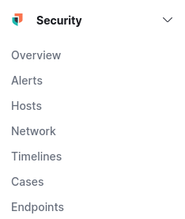
1. Overview
Si se pulsa en Overview se puede realizar una consulta general a todos los eventos que han ido ocurriendo, así como ver los diferentes timelines y casos creados (Mas adelante se verá qué es esto). Para este ejemplo, se ha seleccionado en 'Data view' (esquina superior derecha) el índice filebeat-8.1.0-2022.03.22, que se ha creado con el módulo system de filebeat configurando los eventos de autenticación ssh y accesos al servicio apache.
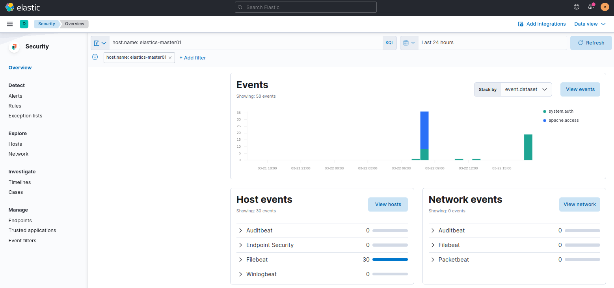
1. Sección Explore
Opción Hosts
Si se selecciona Hosts en la sección Explore, se pueden gestionar los eventos que hayan sucedido, divididos y realizados por y hacia los hosts.
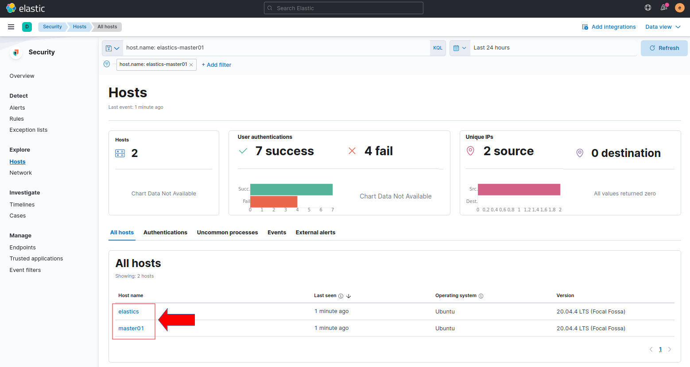
Para acceder a un host, hay que hacer click sobre el nombre del mismo, en este caso, sólo se tiene disponible orion (ver figura superior).
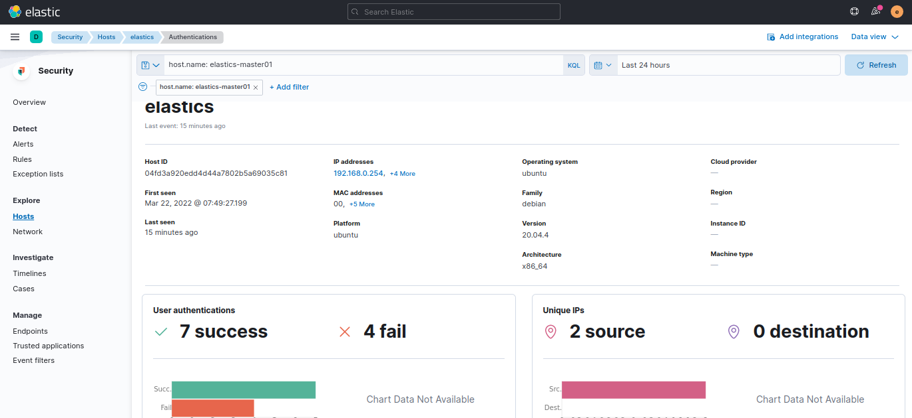
Opción Network
Si se selecciona Network en la sección Explore, se pueden gestionar los eventos de red sucedidos. Se puede consultar los lugares de conexiones en un mapa mundial, numero de eventos de red, IPs de origen, IPs de destino, etcétera.
| 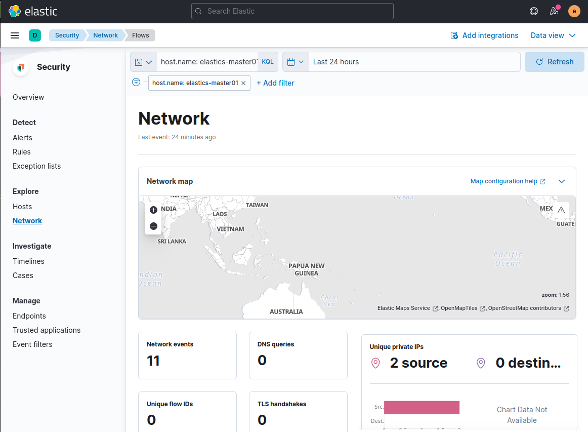 |
Si se selecciona cualquiera de estas IPs se puede ver en profundidad toda su información, como otras IPs de su red o a que ubicación geográfica pertenece entre otros datos.
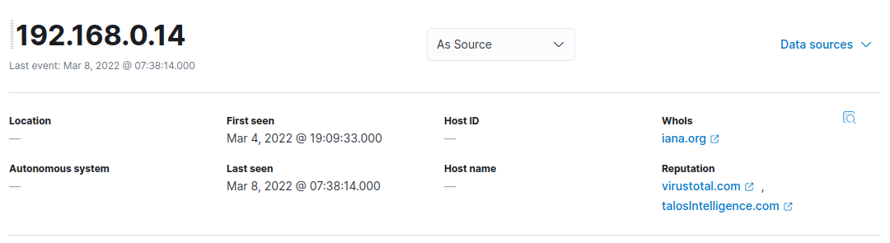
2. Sección Investigate
Timelines
Dentro de la sección Investigate, si se pulsa en Timelines, se puede analizar el tráfico que pueda parecer sospechoso o simplemente no sea común y guardarlo en un línea del tiempo. La primera vez que se accede no exiten timelines por lo que hay pulsar el botón Create new timeline para crear una.
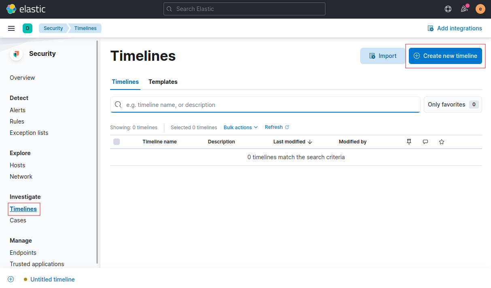
A partir del índice ssh_auth-2022.03.21 que se construyó en el capítulo 3.1.5 se va a realizar el siguiente ejemplo.
Se suponen que en el tráfico del equipo, un equipo extraño se ha conectado mediante SSH. Para ello, el timeline ofrece múltiples opciones para filtrar. Se supone que la IP extraña desde la que han realizado el intento de conexión es la 192.168.0.99.
Dado que en el índice ssh_auth-2022.03.21 se filtran los eventos de autenticación y se añaden fields y tags, se aprovecha también para buscar por el tag ssh_brute_force_attack, de este modo, se da sentido a añadir información sobre los eventos que se recogen en los filtros de logstash. Para filtrar hay que buscar por la IP de origen y por el tag, para ello, hay que pulsar el botón Add field y seleccionar en el campo Field, src_host y en el campo Value escribir la IP que para este caso es 192.168.0.99 y pulsar en 'Save'. A continuación, en la sección AND, se realiza lo mismo para filtrar por el tag, pero en este caso, el campo Field es tags y el valor del campo es ssh_brute_force_attack.
| 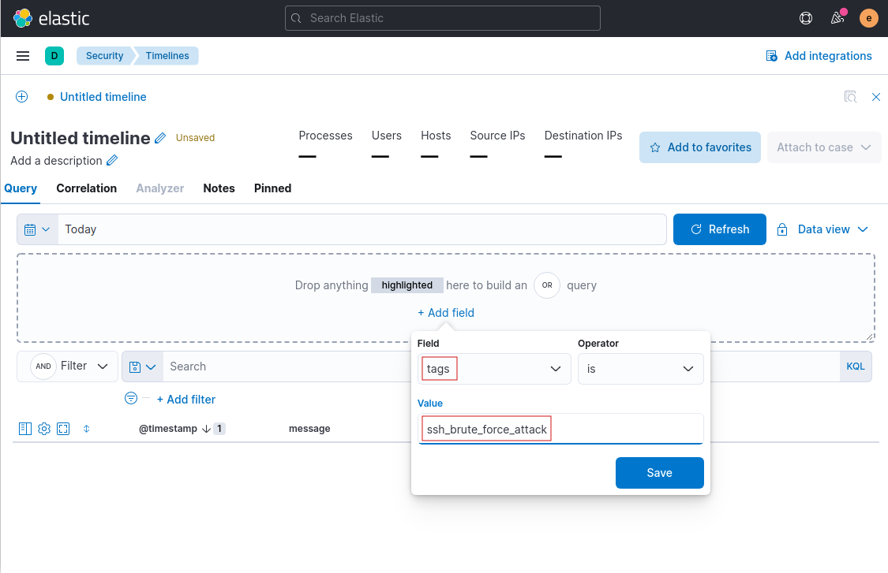 | 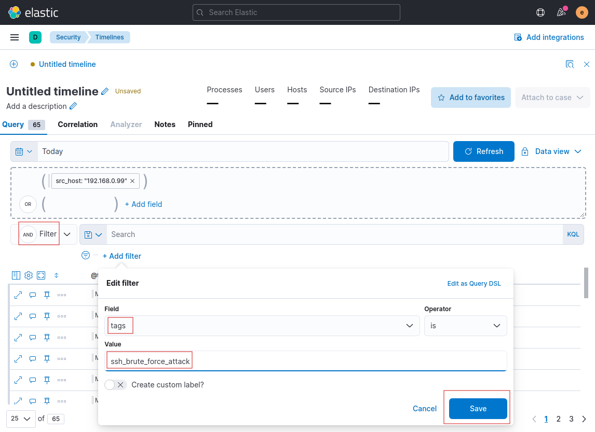 |
| Figura . Filtro por tag. | Figura . Filtro por ip origen. |
{kind=link}
{kind=link}
Una vez se ha pulsado se han guardado los filtros, aparecen todas las conexiones de esta IP como origen y que contengan el tag ssh_brute_force_attac.
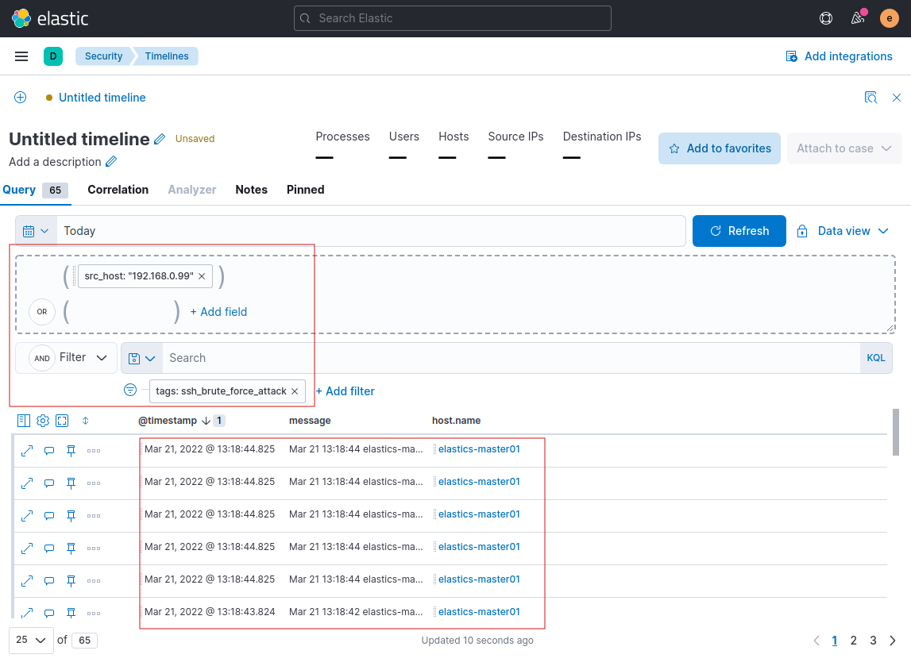
En estos momentos, ya se puede guardar el Timeline para poder analizarlo más en profundidad más adelante ya sea por el usuario que lo originó o cualquier otro usuario . Para ello, hay que hacer clic en el lápiz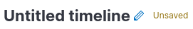y escribir el título y la descripción (opcional) del timeline.
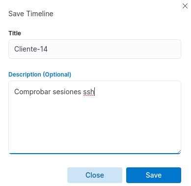
Si se accede a la sección Timelines, se pude observar el timeline que se acaba de guardar.
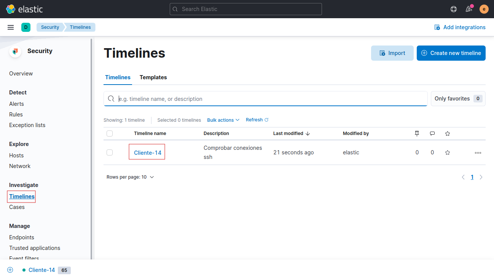
Cases
Esta sección es básicamente un gestor de tareas y actividades referente a los eventos de seguridad sucedidos. Su interfaz es la siguiente.
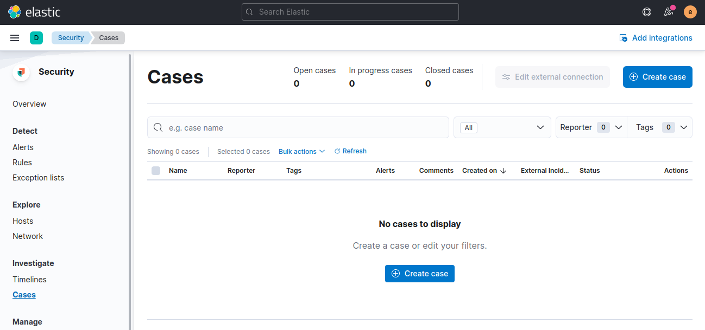
Como ejemplo práctico, se va a crear un caso respecto al timeline (Cliente-a4) que se ha creado anteriormente para hacer una prueba.
Para comenzar, hay que hacer clic en el botón 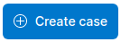.
A continuación, hay que describir lo que ocurre y más adelante asignarle un timeline. Se crea el caso para informar la incidencia de la conexión SSH extraña.
{kind=link}
A continuación, hay que guardar el caso mediante el botón 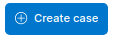.
Una vez se ha pulsado el botón de 'Create case', aparece una nueva ventana con el caso creado.
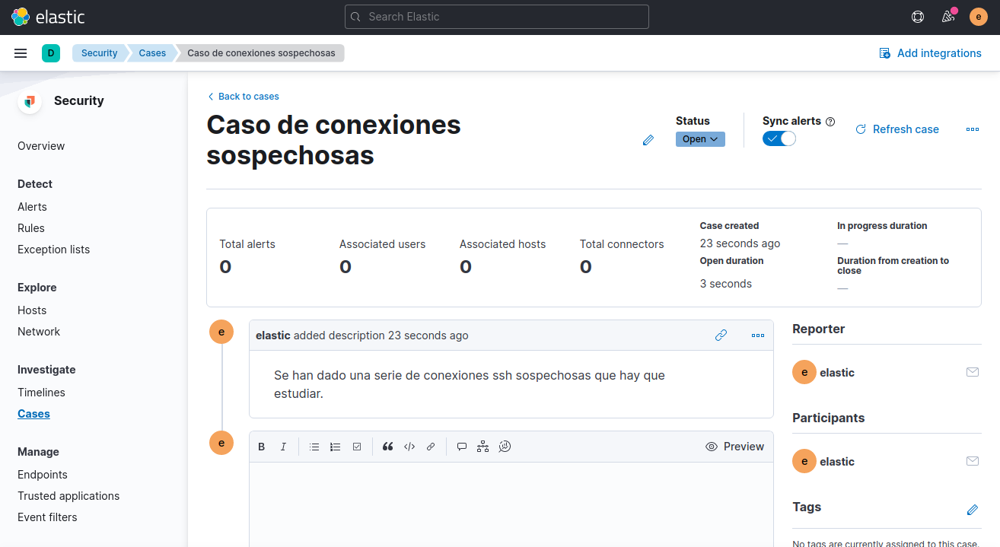
Ahora ya se puede acceder a Timelines, y seleccionar el timeline previamente creado y asignárselo al caso desde el botón Attach to case -> Attach to existing case...
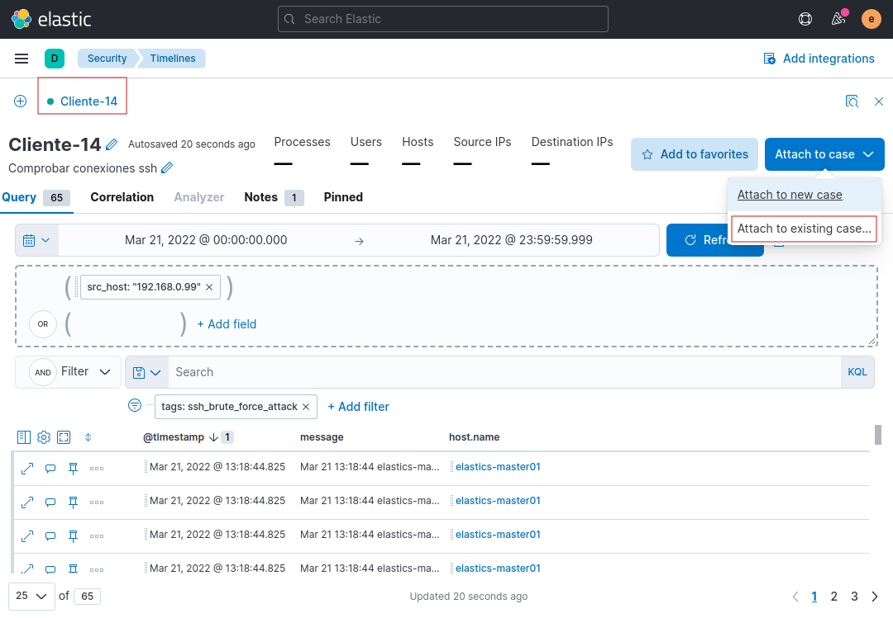
Aparece una nueva ventana donde hay que seleccionar el caso a asignar al TimeLine. Para este ejemplo, el caso es el 'Caso de conexiones sospechosas', que es el credo anteriormente. Para continuar, hay que pulsar en 'Select'.
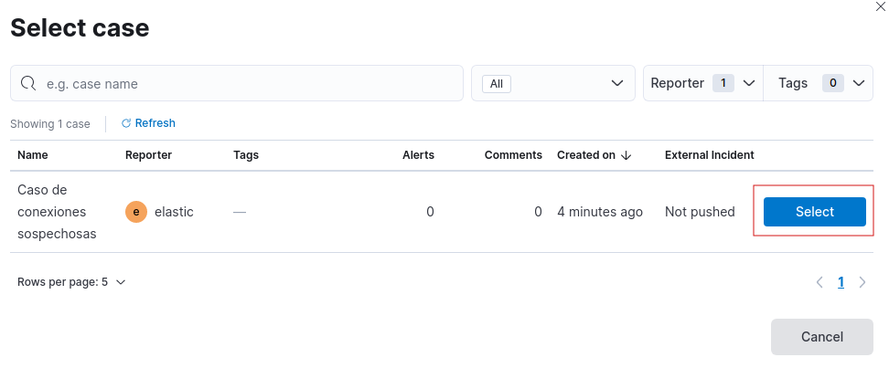
Aparece una nueva ventana con el caso creado con el timeline asignado.
{kind=link}
Para finalizar, hay que pulsar en el botón 'Mark in progress' para indicar que el caso se está llevando a cabo. Una vez se haya finalizado la investigación, para indicar que el caso ya ha finalizado hay que pulsar el botón 'Close case' 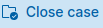.
Obra publicada con Licencia Creative Commons Reconocimiento No comercial Compartir igual 4.0